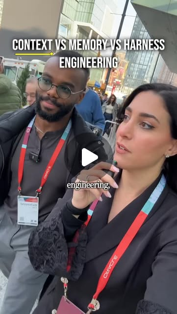
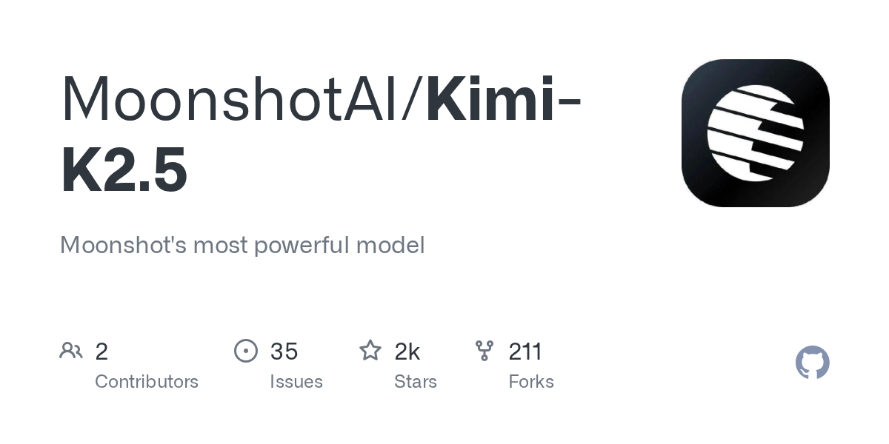

emergent_capability
Why Your Agent Sucks: Architecture Patterns That Actually Work
Better models won't fix broken agent architecture. The gap between demo agents and production agents is context management, memory hierarchy, and harness engineering — not model capability.
Kimi · Onyx · RAG · onyx-dot-app/onyx
Try It — Action Sketch
Audit your agent's context window usage → separate context (ephemeral) from memory (persistent) from harness (structural) → implement retrieval layer (Onyx or similar) → add tool-use via MCP → test with Claude Code as the orchestrator → measure task completion, not conversation quality.
Prerequisites: Familiarity with LLM APIs, basic understanding of RAG. Claude Code or similar agent framework.
Connected Posts (6)
Better models won’t fix your agent
Better models won’t fix your agent. — @howard.mov; demonstrates AI agents.

Context vs Memory vs Harness engineering explained in 40 sec — 💡These 3 disciplines are core to building agents that ...
Context vs Memory vs Harness engineering explained in 40 seconds by Richmond Alake ⚡️ — @lindavivah; demonstrates AI agents.
Comment “agency” to learn how to build your own agentic OS
Comment “agency” to learn how to build your own agentic OS — @chase.h.ai; demonstrates AI agents.
Onyx — open-source self-hosted agentic RAG platform
@marc.kaz flags onyx-dot-app/onyx hitting #1 GitHub trending: self-hostable AI platform with agentic RAG, deep research mode, custom agents, web+code execution, voice/image gen, 50+ connectors. Strong self-hosted AI stack option.
Read Guide →
Kind of like giving your AI glasses lol
Kind of like giving your AI glasses lol — @angus.sewell.

Kimi K2.5 — Moonshot's open multimodal agentic model
by Moonshot AI | Open-source native multimodal agentic model. Strong coding and reasoning benchmarks. Modified MIT License. Available on HuggingFace for self-hosting as an alternative LLM backend. | Modified MIT HuggingFace Self-hostable
Deeper Dive generated 2026-07-06T23:02:35.696952 · Curated by Claude for Gabe (@6ab3) · dejaviewed.com